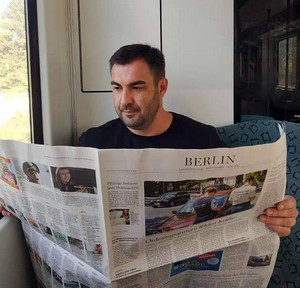

О авторе
Привет, я Александр Лущенко, автор данного сайта и курсов.

Обычно на странице «О себе» пишут хвалебные отзывы и скучную биографию, но читать это не интересно. Просто перечислю факты биографии, которые покажутся интересными.
2005
Начинаю работать – преподаю компьютерные науки. Как оказалось, прожить на деньги преподавателя нельзя, ищу себе подработку.
2008
Cоздаем компанию AlexStudio. Разрабатываем сайты, решения для бизнеса, SEO и продвижение. Моя доля ответственности - Frontend, SEO. Компания становится довольно известной и сарафанным радио находим много клиентов.
Стек: PHP, JS, jQuery.
2010 - 2014
Работаем. Очень много. Клиенты из Москвы, Казахстана, Украины.
Много работаем с большим бизнесом.
Созданные сайты (основной упор на магазинах) обходят в выдачах производителей товара – по топовым запросам и регионам.
2014
Переломный. Соседняя страна рф начинает войну против Украины. Я вынужден уехать из родного города (Луганск) и переехать в Киев. Из вещей – сумка и рюкзак с ноутбуком.
Кстати, о технике. У меня был Acer eMachines E730Z 4 гб ОЗУ, Pentium DualCore, который я заменил на Core i3. Да, тогда были ноутбуки в которых можно было менять процессор.
В Киеве я купил монитор Phillips philips brilliance 220c. Именно на такой сборке я работал много лет